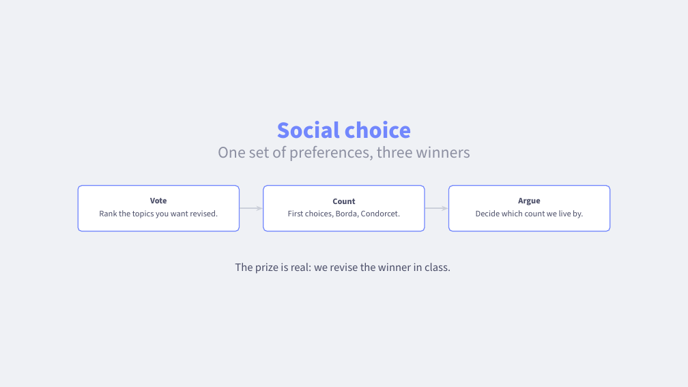
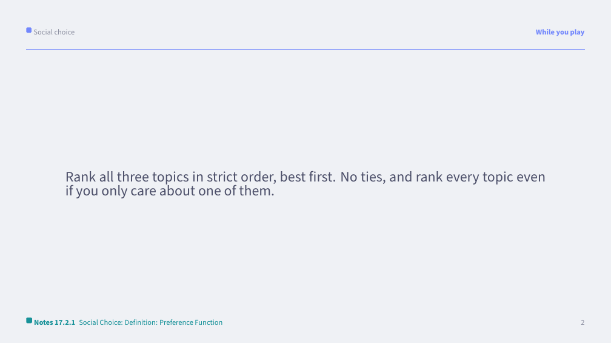
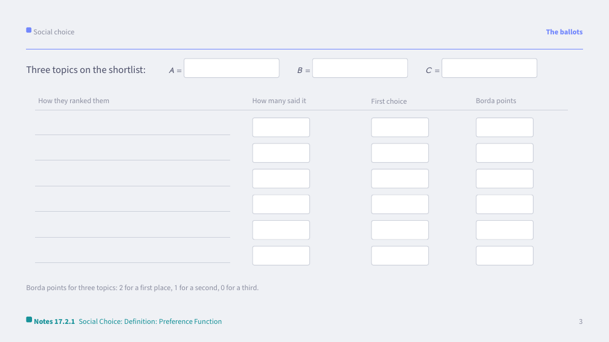
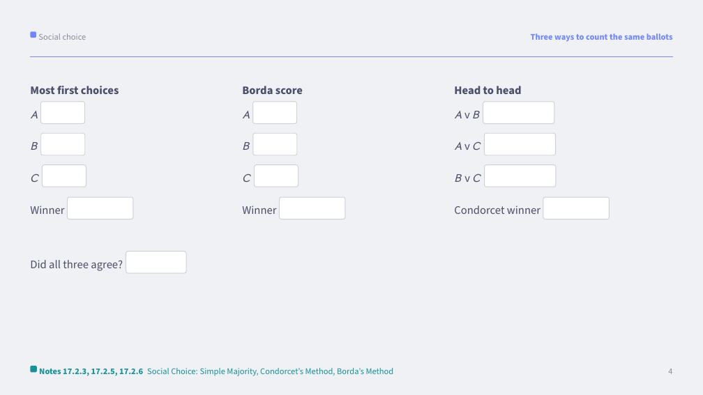
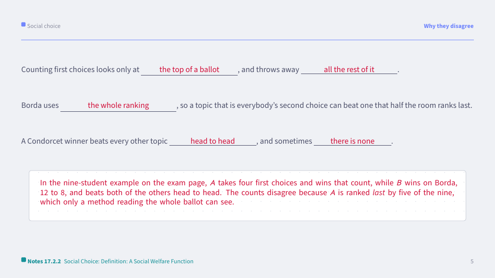
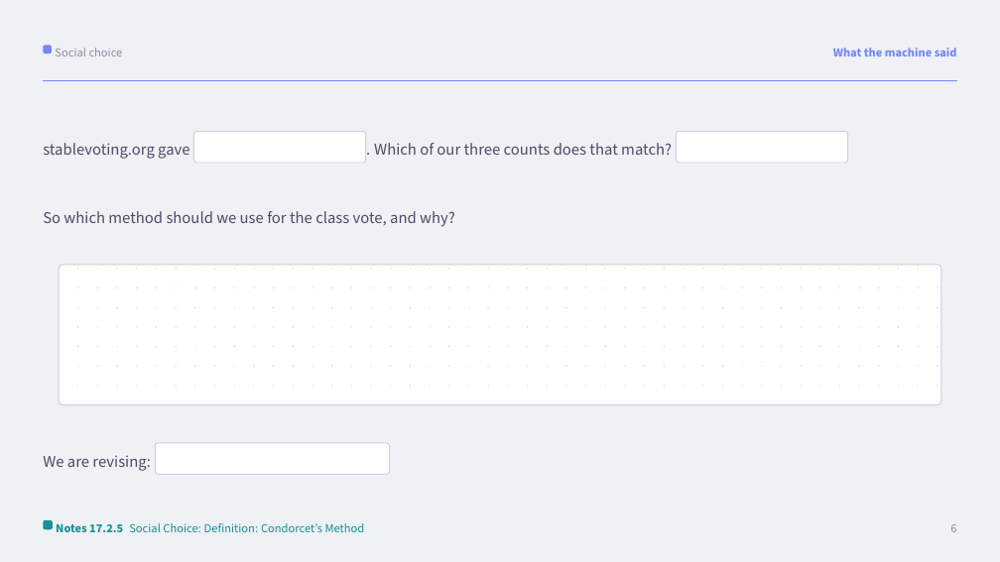
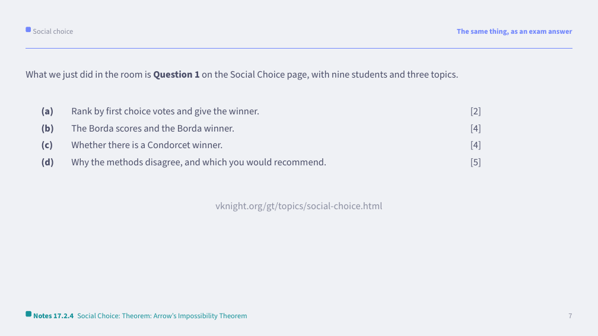
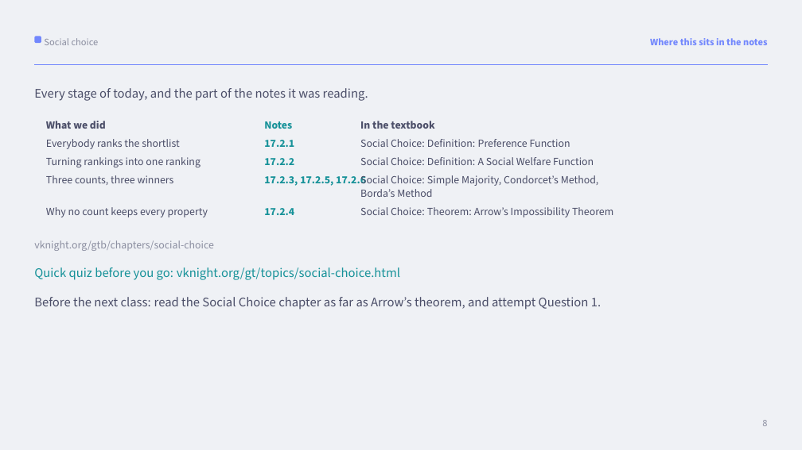

Goal. Show that different voting rules can give different winners from the same preferences. This doubles as a revision-topic vote.
The deck. There is a write-on deck at /decks/social-choice/main.pdf: a ballot table for the rankings, then the same votes counted three ways side by side, so the disagreement is visible on one page.
Every slide of the deck names the numbered section of the notes it is reading, and the last slide gathers them into one table, marks what is examinable and sets the reading for the next class. A "While you play" slide carries the rules: leave it up while the room plays.
List all topics from the course on Menti and ask students to choose which one we revise in class.
Now list them all on https://stablevoting.org and discuss whether the approach gives a different result.
Work through the Social Choice chapter.
Discussion Point: After the definition of Majority rule ask how these apply to the revision topic choice.
Discussion Point: After the condorcet method and the borda method definitions ask which one they feel was used by stablevoting.org?
Close on the last slide. It names what the class was reading and sets the reading for next time. Then run the quick quiz from the Social Choice topic page: five questions on the screen, answered by a show of hands. It takes five minutes and tells us both what landed.
Every page of the deck with its boxes completed is at the foot of this page. The ballots, the three counts and what stablevoting.org returned are the class's own vote, so those boxes stay empty there.
The topics come from the class. These are the answers for the example on the exam page: nine students rank three topics, with four saying \(A \succ B \succ C\), three saying \(B \succ C \succ A\) and two saying \(C \succ B \succ A\).
First choices. \(A\) has 4, \(B\) has 3, \(C\) has 2, so \(A\) wins.
Borda, with 2 points for a first place, 1 for a second and 0 for a third: \(A\) scores 8, \(B\) scores 12 and \(C\) scores 7, so \(B\) wins.
Head to head. \(B\) beats \(A\) by 5 to 4, \(C\) beats \(A\) by 5 to 4, and \(B\) beats \(C\) by 7 to 2. So \(B\) beats everyone and is the Condorcet winner.
Why they disagree. Counting first choices looks only at the top of each ballot and throws the rest away, so it cannot see that \(A\) is last for five of the nine students. Borda and the head-to-head comparisons both use the whole ranking, and both pick \(B\), the topic that no group actively dislikes. That is the argument for recommending one of those two for the class vote.
The activity above is written up as a marked exam question: Question 1 (the in-class activity) on the Social Choice page, with a full worked solution. Closing the loop here is the step that helps students who find exams hard: work through that question together, or set it as the immediate follow-up, so they see the game they just played turned into a full-mark answer.
Every page of the deck with its boxes completed, built from the same source as the blank deck we project. Click a page to see it full size.








General email templates to send before and after this class. Fill in the bracketed placeholders before sending.
Hi all,
A reminder that our next Game Theory class covers Social Choice.
All of the course materials, including the relevant chapter, are available
at https://vknight.org/gt/. It is worth skimming the chapter beforehand.
See you in class,
Vince
Dear all,
Thanks for your work in today's class on Social Choice.
A recording is available here [RECORDING LINK] and on Learning Central.
All class resources are available at https://vknight.org/gt/.
Thanks,
Vince